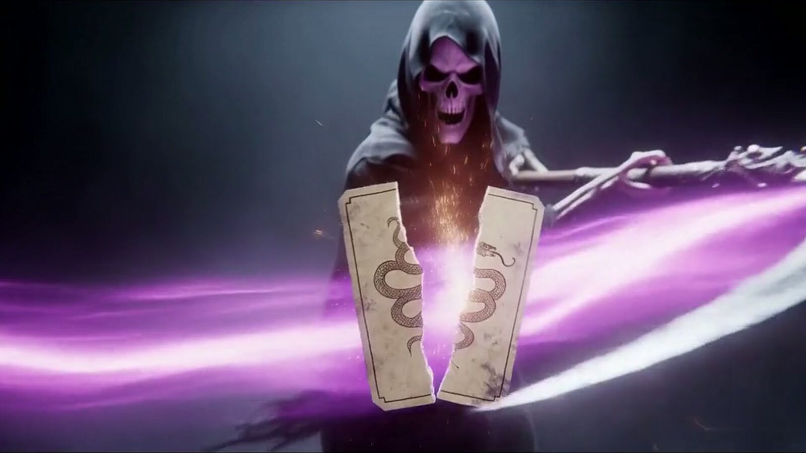

El Proyecto Tarot Gótico 2026
Diseñado, desarrollado y publicado por Cyril Darbost, Tarot Gótico 2026 nació del deseo de ofrecer un juego de cartas tradicional con una identidad visual fuerte, oscura y cuidada, garantizando un rendimiento técnico impecable en smartphones y tabletas.

El proyecto reúne un motor de juego fluido en solitario contra la IA, un sistema multijugador en tiempo real y una experiencia inmersiva para los apasionados.
Tarot 2026 es un juego de tarot social para Android: una aplicación móvil Android para smartphones y tabletas, disponible gratis en Google Play.
Creador y editor
Tarot Gótico 2026 está íntegramente creado, desarrollado y publicado por Cyril Darbost. Para cualquier pregunta, sugerencia o error: babylone.ch@gmail.com o cyrildarbost@gmail.com.
Una aplicación de juegos móviles diseñada para la estabilidad
Tarot Gótico 2026 está desarrollado con Flutter y se apoya en Supabase para las cuentas, las puntuaciones y las mesas multijugador en tiempo real. La aplicación funciona en smartphones y tabletas Android, ofrece quince idiomas y pasa por una beta cerrada en Google Play para garantizar la fiabilidad de las partidas online.
Preguntas Frecuentes (FAQ)
¿Es gratuita la aplicación?
Sí, es gratis para descargar y jugar. Las mesas online usan fichas que se ganan jugando; las fichas y los elementos de personalización también se ofrecen como compras integradas opcionales.
¿En qué dispositivos se puede jugar?
Tarot Gótico es un juego exclusivamente móvil: se instala en smartphones y tabletas Android desde Google Play.
¿Cómo contactar al desarrollador?
Escribe a Cyril Darbost: babylone.ch@gmail.com o cyrildarbost@gmail.com. También puedes hablar con otros jugadores en el servidor de Discord de la comunidad.
Agradecimientos y créditos musicales
La música de la aplicación está compuesta por Alex-Productions:
- «Freaky Halloween» (2024) – música de bienvenida. Fuente: onsound.eu. Licencia: Creative Commons Reconocimiento 3.0 (CC BY 3.0).
- «Slice» – música de introducción. Fuente: onsound.eu. Licencia: Creative Commons Reconocimiento 3.0 (CC BY 3.0).